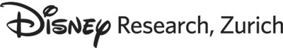

News
- DDFF made its way to ACCV in Perth, Australia.
Sep 26, 2018
- Invited to give a talk at Machine Learning Meetup #1 event.
May 29, 2018
- Visiting Prof. Ian Reid's lab at ACVT in Australia for 2 months.
February 12, 2018
- Our paper featured on ICCV Daily magazine.
October 22, 2017
- Invited to Dagstuhl on
Deep Learning for Computer Vision.
September 24, 2017
-
DDFF 12-Scene Benchmark is publicly available.
September 15, 2017
-
ICCV 2017 papers are here and here with cool results.
July 16, 2017
-
I've been accepted to internship at .
April 13, 2017
-
ACM Munich Student Chapter founded. I am a charter member.
June 9, 2016
-
Kyoto, here I am coming! Joining the MLSS'15 Kyoto.
April 24, 2015
-
FlowNet is accepted to ICCV 2015.
September 12, 2015
TechTalk @ACM Munich